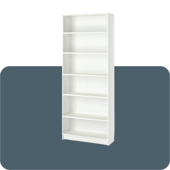
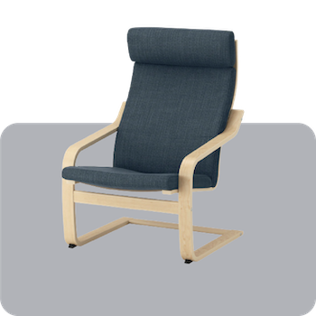
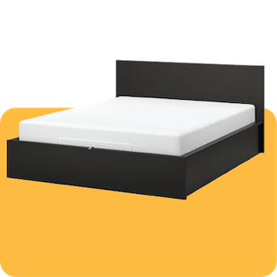
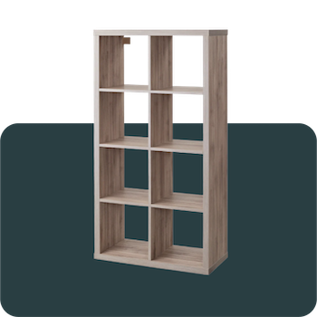
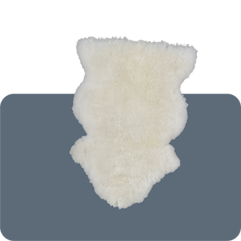

Most Popular Products
Ikea has a huge fan following. From college students to experienced designers, people love Ikea’s simplistic, Scandinavian designs. Here are the most 5 most popular Ikea Items of all time.
Billy
The Billy Bookcase is a timeless piece. Every five seconds, a Billy is sold somewhere in the world. The Bookcase was designed in 1979 by Steve Mckenzie.
Poang
The Poang chair was designed by Noboru Nakamura, a Japanese designer. The chair features stylish curved lines in bentwood, providing comfortable support.
 Malm Bed
This bed is minimalist and features a simplistic design. This item is a perfect example of Scandinavian minimalism.
Kallax
Formerly known as Expedit, Kallax is a clean, cubic designed shelf unit. It is often used against a wall or as a room divider.
 Rens Sheepskin Rug
This rug is very multifunctional and is often used next to beds, thrown over the back of a chair, or layered on top of larger living room rugs.